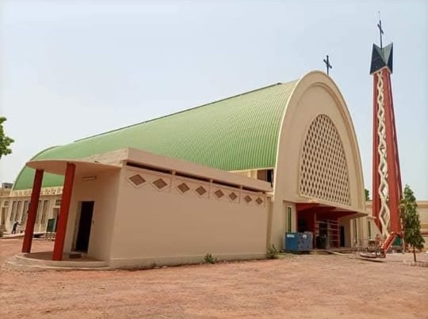
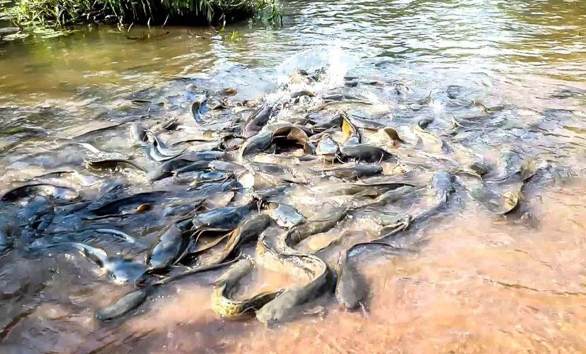

Bobo-Dioulasso
Sites Patrimoniaux de Bobo-Dioulasso
-
üïå Grande Mosqu√©e de Dioulassob√¢

-
üè∫ Mus√©e Sogossira Sanon

-
⚰️ Mausolée de la Princesse Guimbi Ouattara

-
üé® Village Artisanal

-
⛪ Cathédrale Notre-Dame de Lourdes

-
üíß Bassins sacr√©s de Dafra

-
üé≠ Centre Culturel S√©noufo Ren√© Fournier

-
üå≥ For√™t du Kou (Guinguette)

-
üõçÔ∏è Vieux March√© de Bobo-Dioulasso

-
⚔️ Mausolée Tiéfô Amoro